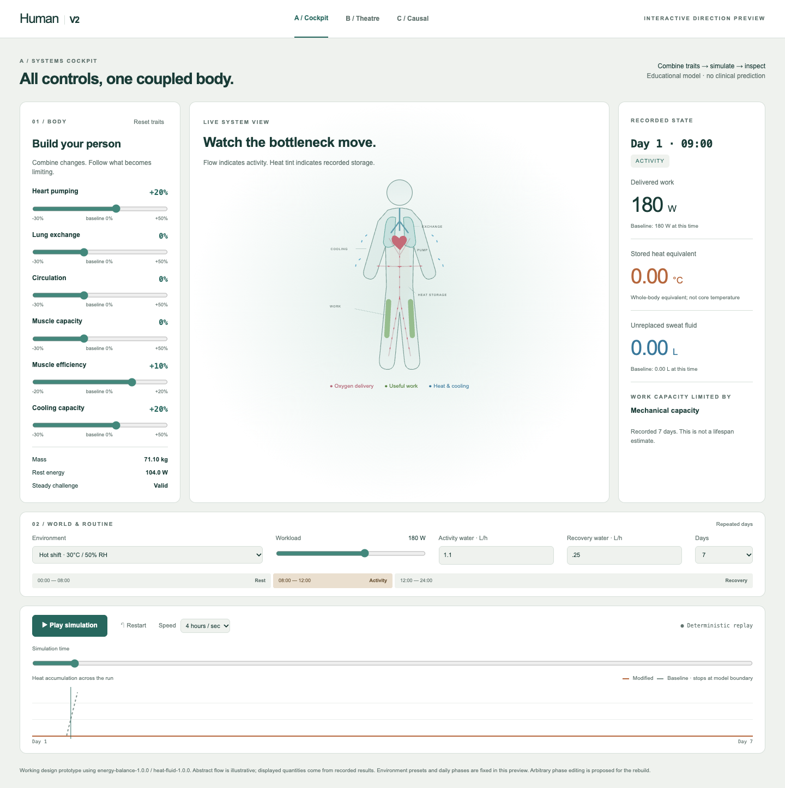
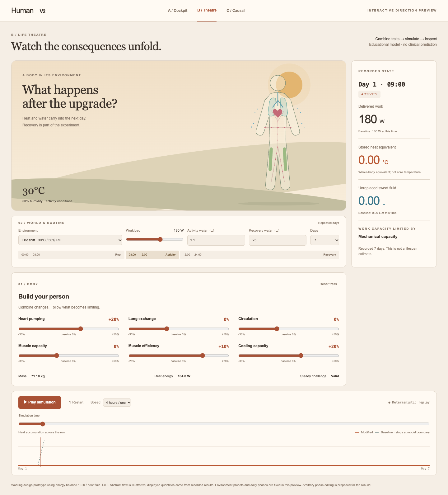
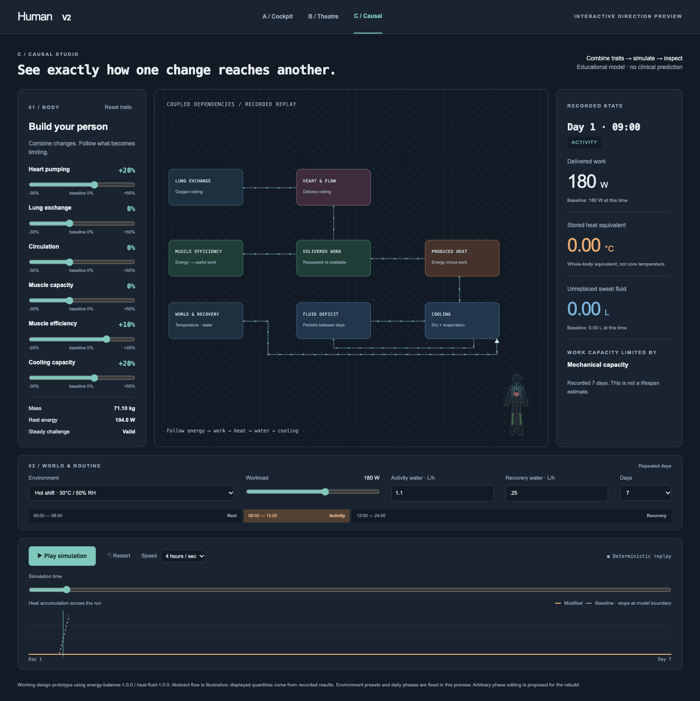

A laboratory you can drive.
Six traits together, a large body diagram, live state beside it and replay below. Precise and familiar.
Open interactive preview →These working previews put simultaneous body and scenario controls beside simulation playback. Change several traits, set the world and routine, then play, pause or scrub the recorded state. The three systems offer different ways to understand the same model.

Six traits together, a large body diagram, live state beside it and replay below. Precise and familiar.
Open interactive preview →
An environment stage, the person at its centre, a combined trait console and a replay timeline. The strongest route toward embodied consequences.
Open interactive preview →
An animated dependency network makes energy, workload, heat and water connections explicit, with the body as a secondary view.
Open interactive preview →Prototype fidelity: displayed quantities come from the existing deterministic model. Flow and organ motion are illustrative; they are not measured breathing or heart rates. This direction review is not the finished rebuild.